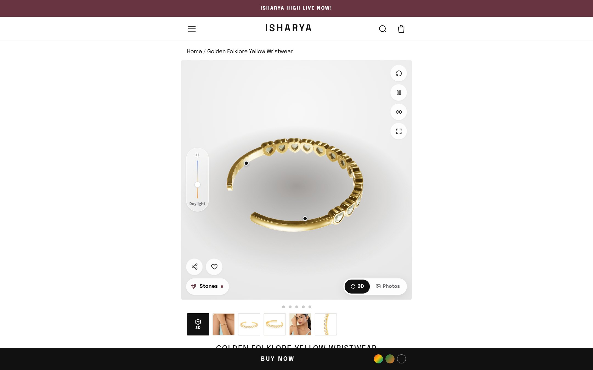
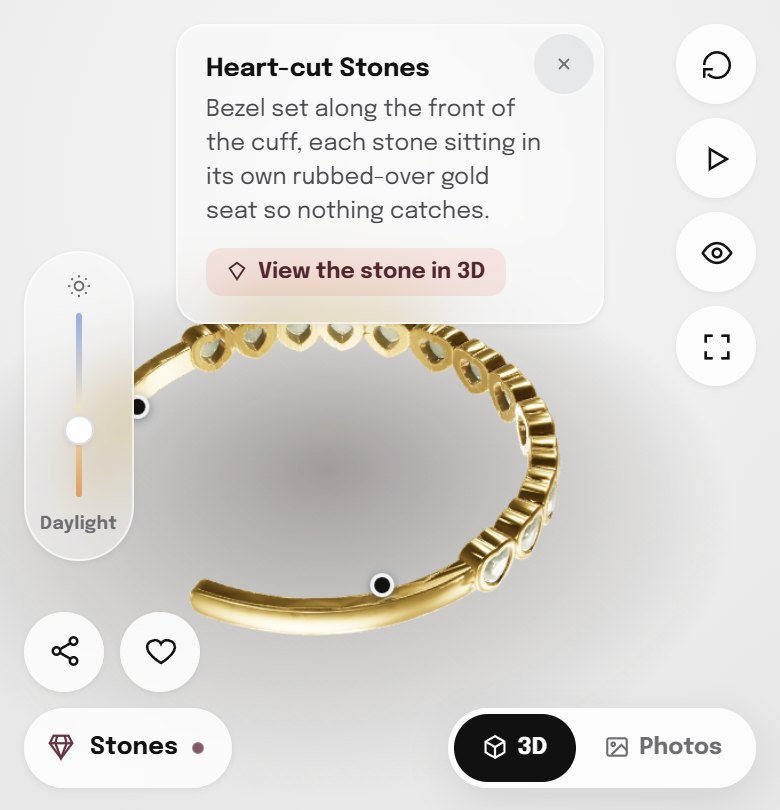
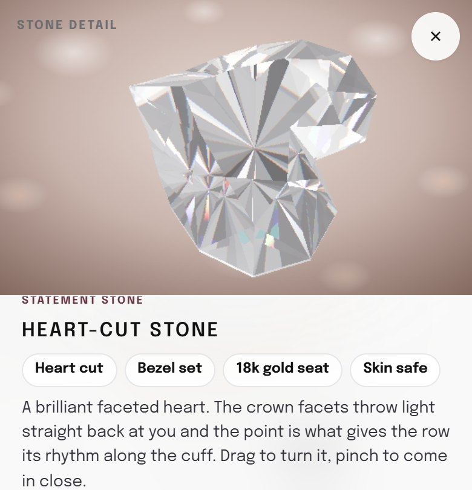
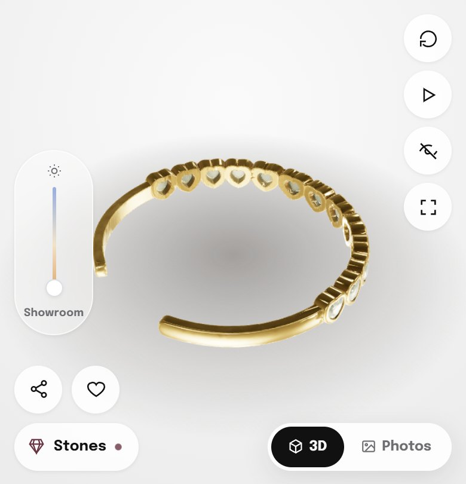
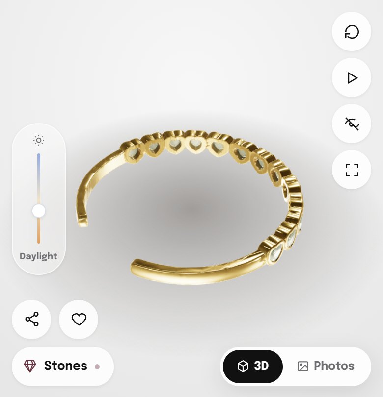
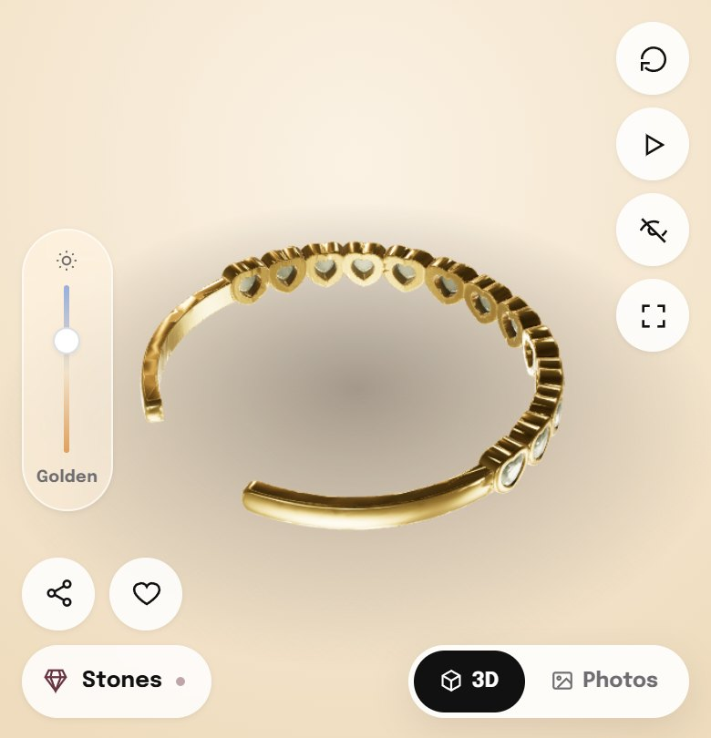
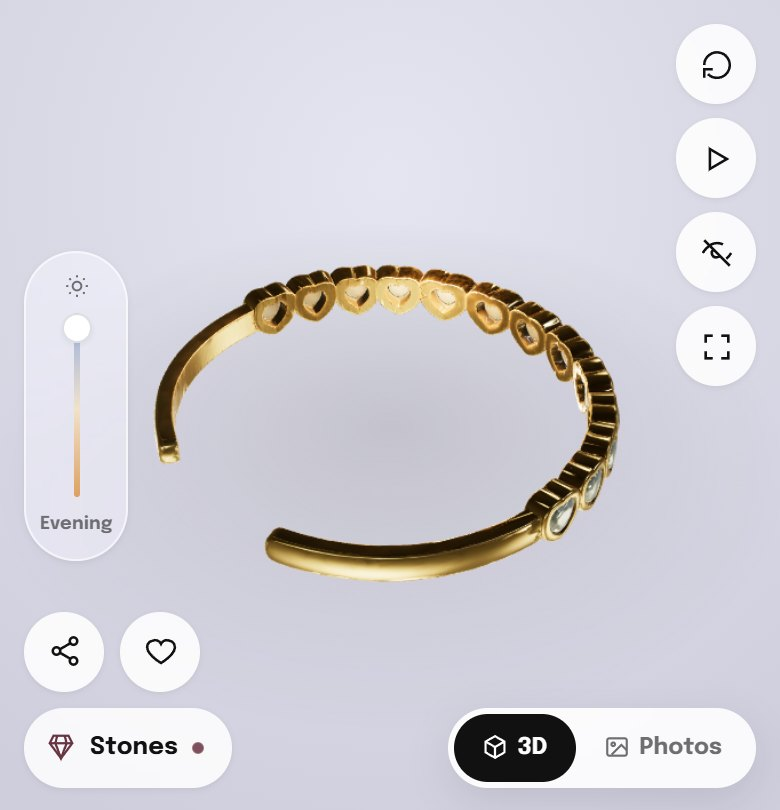
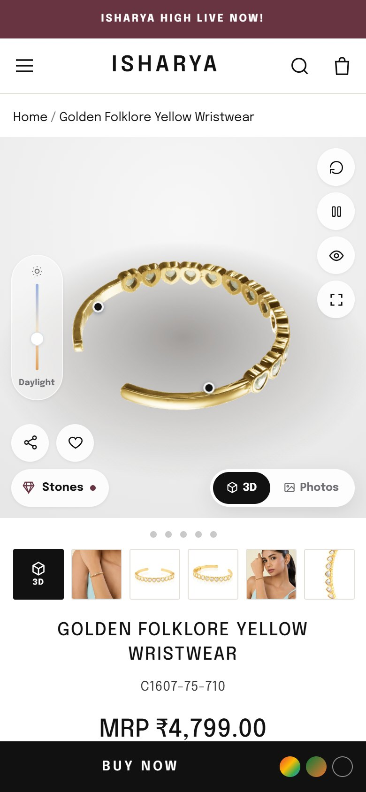
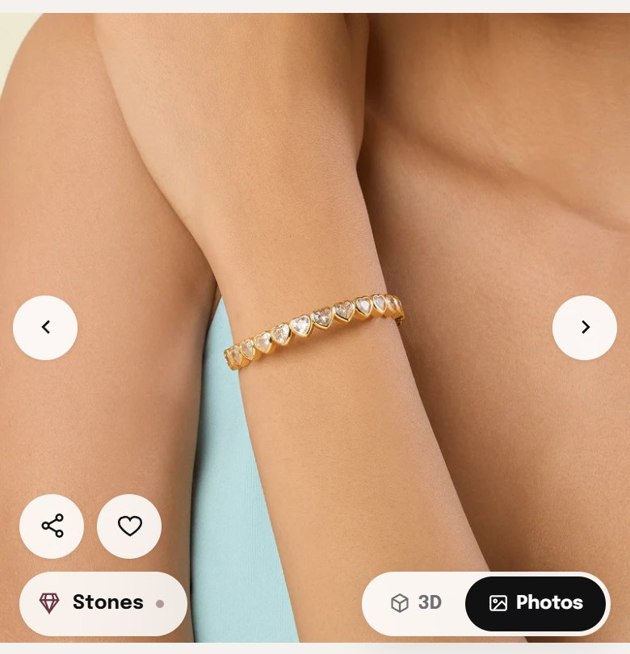

A photo shows jewellery from one angle, under one light. We built a 3D product view for the Golden Folklore Yellow Wristwear that runs right inside the product page. The shopper can rotate the cuff, see the heart-cut stones catch the light up close, and switch from showroom light to evening light. It works on a phone without an app, and it sits on top of the existing photo gallery rather than replacing it.
Everything in the phone works exactly as it would for a shopper. Try these:
Show the full shape of the cuff, including the open back that photos rarely explain.
Let the shopper inspect a single stone up close and watch it throw light as it turns.
Show how 18k gold plating looks in daylight, golden hour and evening, not just in a white studio.
Give the shopper something to play with, so she spends longer with the product and closer to the buy button.
The live page for the Golden Folklore Yellow Wristwear sells a ₹4,799 statement cuff with five still photos. They're good photos, but each one answers only part of what a shopper wants to know before paying.
"Open cuff, one size, adjustable" is a line of text. Whether the opening sits at the back, how wide it is and how the stones run along the front are all things a shopper has to piece together from separate angles.
The heart-cut stones are the reason to buy this piece. In a still image they read as small white shapes. What a shopper is really judging, the way the facets flash as the piece moves, is exactly what a photo can't show.
Yellow gold looks different in daylight, at golden hour and under evening lights. "Will this look too yellow on me at a dinner?" is a real question with no answer on the page today.
For each one: why it's on the page, and why it looks the way it does. The viewer uses Isharya's own look: Epilogue type, the burgundy accent and soft frosted-glass controls that sit over the product without hiding it.


Three dots sit on the model itself: Heart-cut Stones, 18k Gold Plating and Open Cuff. Each opens a two-line note about that exact part. The product description moves from a paragraph below the fold to the spot on the piece it describes.
The stones note has a "View the stone in 3D" button that leads straight into the stone close-up.

The "Stones" button opens one heart-cut stone at full size. The shopper can turn it and zoom in, and the facets flash and split light into small rainbow edges the way a real cut stone does. It's the closest a screen gets to tilting the piece under a store light.




One vertical slider moves the scene through four lighting moods. The gold, the stones and the background all shift together, so the shopper sees how the cuff looks at a lunch, at golden hour and at an evening event, not only in a white studio.
A single slider rather than four buttons, so the change is smooth and invites play. The track runs from warm to cool and names the current mood underneath, so the shopper always knows which light she's looking at.


3D shows the piece, but an on-wrist photo shows the person. A "3D / Photos" switch keeps Isharya's existing product and model photography exactly where it was, so nothing is lost by adding the viewer.
A two-option pill in the corner, black for the active mode, so it's always clear which view is on. The 3D view sits on top of the existing gallery, so the rest of the product page is unchanged.
The viewer is a reusable Shopify section. Once it's proven on this cuff, adding another product means creating its 3D model and its three story points. The viewer itself doesn't change.
Built as a Shopify section that sits on top of the existing gallery, so the live storefront is untouched until Isharya has reviewed it.
Split traffic on the Golden Folklore Yellow Wristwear between the current gallery and the 3D view, and compare add-to-cart rate, conversion and time on page.
Cuffs, rings and tennis pieces, where the stones are the reason to buy, get the most from 3D. Each needs a model, its story points and its stone close-up.
The same 3D files can power ad creatives, collection page previews and try-on features later, so the investment in each model keeps paying back.
Troopod is run by operators who have built and scaled billion-dollar consumer businesses from scratch.
Recently working with, among others:
Early product at Spinny. Built an internal CRM that lifted team efficiency by 10x.
Tech at Lenskart. Built a backend retail system scaled to 10 million plus customers.
Early growth at Spinny. Now driving growth for 100+ consumer brands at Troopod.